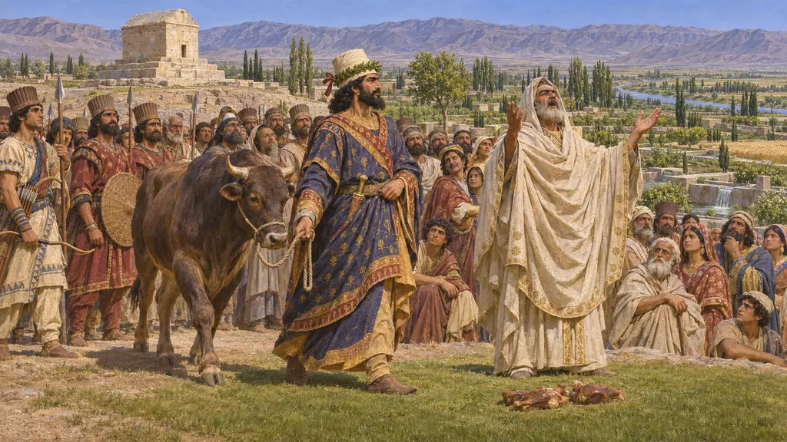
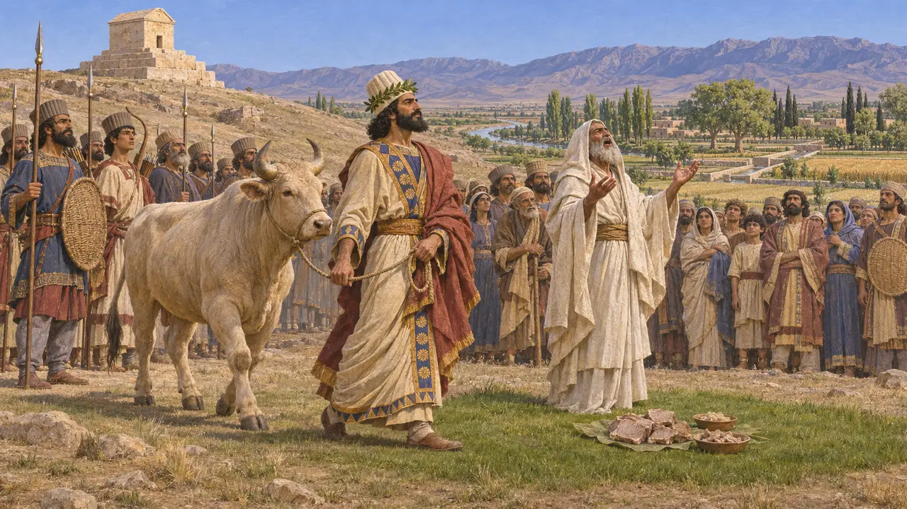
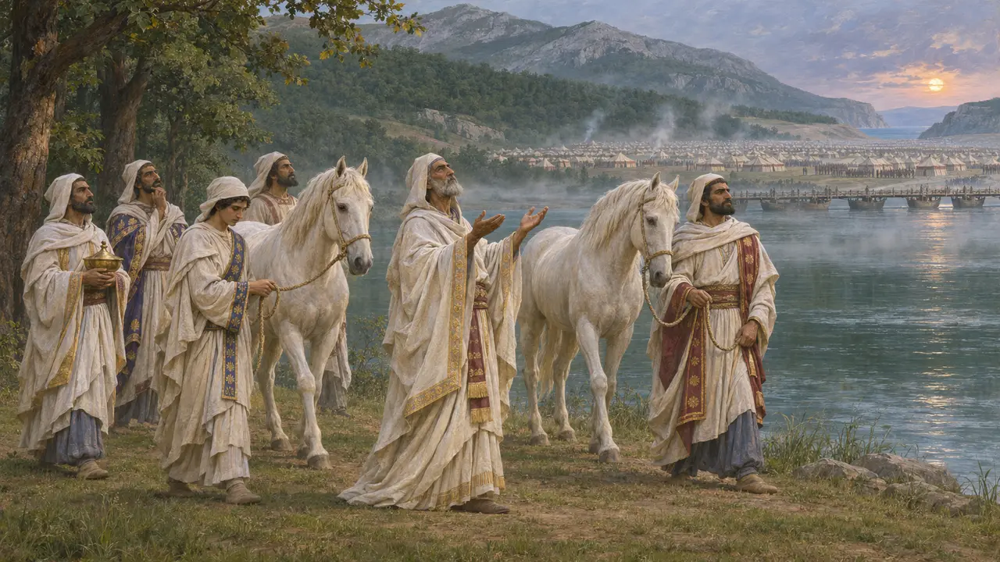
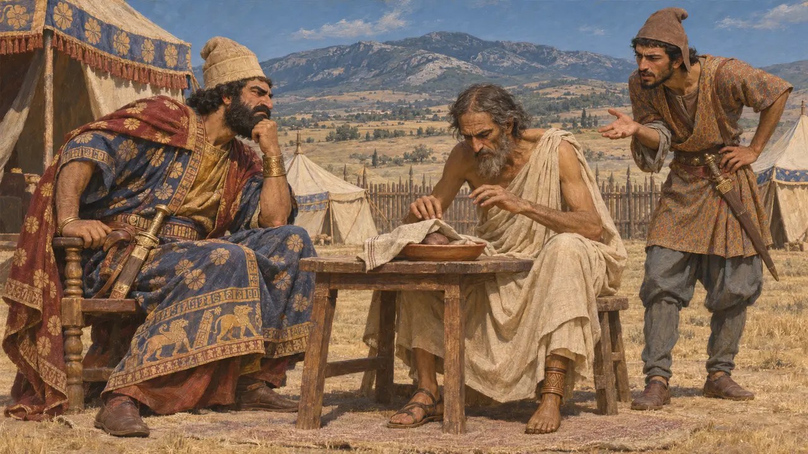

Come sacrificava un Persiano
Il rito secondo Erodoto
Erodoto dà una sola descrizione dettagliata di un sacrificio persiano, ed è strana di proposito: niente altare, niente fuoco, niente musica, niente vino versato. In parte le tavolette la contraddicono. In parte non possono verificarla.
Nel gioco: Il Sacrificio per il Re lo segue: folla, un sacerdote, una vittima, niente flauti. Legge i presagi, e quelli buoni danno coraggio ai tuoi soldati.

Il rito
Racconto anticoChi sacrifica conduce la vittima in un luogo puro e invoca il dio, con una corona di mirto sulla tiara. Non può pregare solo per sé, ma soltanto per il Re e per tutti i Persiani, lui compreso. Fa bollire la carne, la pone sull'erba più tenera, e un mago canta. Poi porta la carne a casa.
Herodotus 1.132

Cavalli bianchi e mille buoi
Racconto anticoMarciando sulla Grecia, Serse sacrifica mille buoi ad Atena a Ilio mentre i Magi versano libagioni agli eroi. Allo Strimone i Magi sgozzano cavalli bianchi per avere buoni presagi. Al largo della Magnesia sacrificano al vento per tre giorni ed esso cessa, oppure, aggiunge Erodoto, cadde da solo.
Herodotus 7.43, 7.113-114, 7.191

Fonti
- Herodotus